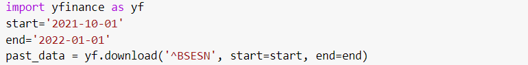
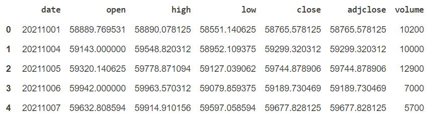
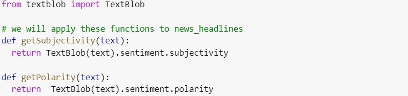
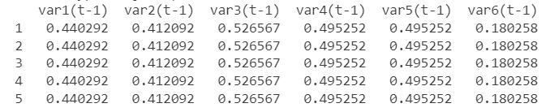
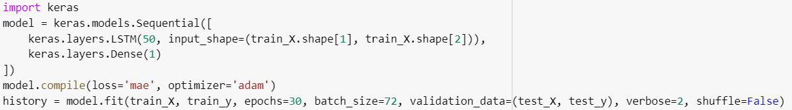
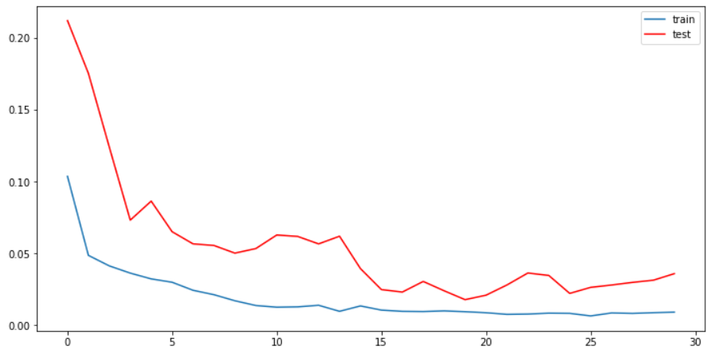

The goal of this project is to create a hybrid model for stock price/performance prediction using a combination of numerical analysis of historical stock prices and sentimental analysis of news headlines.
For the purposes of this project, I'll work on analyzing and predicting SENSEX (S&P BSE SENSEX).
For stock prices, I used yfinance library which scrapes data from yahoo.finance.


For the (textual data) news headlines I used Times of India News Headlines dataset.
I used NLTK - Natural Language Toolkit to preprocess headlines, perform stemming and remove stop words.
Then used TextBlob for sentiment analysis, calculating Subjectivity and Polarity, in order to provide insight for our model on how news and media coverage can impact a stock's performance.
-Polarity > 0 means the text is positive otherwise negative
-Subjectivity quantifies how personal or factual it is, high subjectivity means it is more of a personal opinion

Then calculated negativity, positivity, neutrality, and compound using nltk's Sentiment Intensity Analyzer
First, I merged the stock's historical data and resulting data from sentiment analysis then I convert the merged data to a supervised format var(t-1) → var(t)

After splitting the data to test and train I built and trained a simple LTSM model using tensorflow.

Comparing training and validation loss:

We achieved a root mean squared error of 111.046 which is good enough considering the magnitude of SENEX price values.